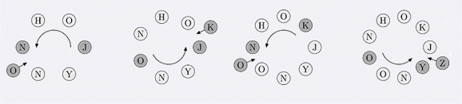

输入为两行，第一行为3个数n,k,m，n表示初始的圈的长度，k,m如题面描述。 第二行为一个长度为n的单词，起点为单词的第一个字母。字母全部是大写字母。
Game Johnny最近在玩报数游戏，首先他把一些字母先成一个圈，然后他选择其中一个字母作为开始的位置，逆时针报数，每报到k，则考察当前的字母，把当前字母的下一个字母插入在当前的下一个位置中，举个例子，比如当前的字母是A，则把B插入当前的位置之后，如果当前的字母是C，则把D插入当前位置之后，如果当前位置是Z，则把A插入当前位置之后，并从插入的位置接着报数。如下图。  初始时，JOHNNY构成一个圈，J是起点，K=3。 现在的任务是给出M，求第M个添加进圈里的元素是什么。
输入为两行，第一行为3个数n,k,m，n表示初始的圈的长度，k,m如题面描述。 第二行为一个长度为n的单词，起点为单词的第一个字母。字母全部是大写字母。
一个字符表示第m次加入这个圈的字符。
6 3 4
JOHNNY
Z
其中n<=10000,k<=100000,m<=109
Northeastern Europe 2006, Northern Subregion